Exploring Opioid Prescriptions
Jared Garfinkel
11/29/2019
opioid_death_data = read_csv('./opioid_related_deaths.csv') %>%
janitor::clean_names()## Parsed with column specification:
## cols(
## Year = col_double(),
## County = col_character(),
## `Opioid Poisoning Deaths` = col_double()
## )opioid_er_data = read_csv('./opioid_related_visits.csv') %>%
janitor::clean_names()## Parsed with column specification:
## cols(
## .default = col_double(),
## `Patient County Name` = col_character(),
## `Rural/Urban` = col_character(),
## Payer = col_character()
## )## See spec(...) for full column specifications.opioid_treatment_distance = read_csv('./distance_to_treatment.csv') %>%
janitor::clean_names()## Parsed with column specification:
## cols(
## STATEFP = col_character(),
## COUNTYFP = col_character(),
## YEAR = col_double(),
## INDICATOR = col_character(),
## VALUE = col_double(),
## STATE = col_character(),
## STATEABBREVIATION = col_character(),
## COUNTY = col_character()
## )prod_county = arcos::summarized_county_annual(state = "NY", key = "WaPo") %>%
janitor::clean_names()
county_pop = arcos::county_population(state = "NY", key = "WaPo") %>%
janitor::clean_names()# clean opioid death data #
opioid_death_data = opioid_death_data %>%
filter(year >= 2010) %>%
mutate(county = recode(county, "Kings (Brooklyn)" = "Kings",
"New York (Manhattan)" = "New York",
"St Lawrence" = "St. Lawrence"))
# clean opioid er data #
opioid_er_data = opioid_er_data %>%
select(year, patient_county_name, rural_urban, payer, er_opioid, inpatient_total_opioid, er_inpatient_total_opioid, outpatient_opioid, overall_opioid) %>%
rename(county = patient_county_name)
# Combine Data Sets #
opioid_total_data = left_join(opioid_er_data, opioid_death_data, by = c('county', 'year')) %>%
arrange(county, year)# Top 20 Counties by Number of Prescription Opioids, 2006-2012 #
prod_county %>%
group_by(buyer_county) %>%
summarize(numpills = sum(count)) %>%
top_n(20, numpills) %>%
mutate(buyer_county = factor(buyer_county),
buyer_county = fct_reorder(buyer_county, numpills)) %>%
ggplot(aes(x = buyer_county, y = numpills)) +
geom_col() +
xlab("County") +
theme(axis.text.x = element_text(angle = 90, hjust = 1))
# Pills bought by Pharmacies in Each county per Year #
pharma_df = left_join(prod_county, county_pop, by = c("buyer_county", "year")) %>%
select(county_name, year, count, population) %>%
rename(county = county_name,
pills_bought = count) %>%
mutate(ppp = pills_bought/population)# Top 20 Counties by Number of Pills Bought Per Person in 2012 #
pharma_df %>%
filter(year == 2012) %>%
mutate(county = factor(county),
county = fct_reorder(county, ppp)) %>%
top_n(20, ppp) %>%
ggplot(aes(x = county, y = ppp)) +
geom_col() +
theme(axis.text.x = element_text(angle = 90, hjust = 1)) +
xlab("County") +
ylab("Pills Bought per Capita, 2012")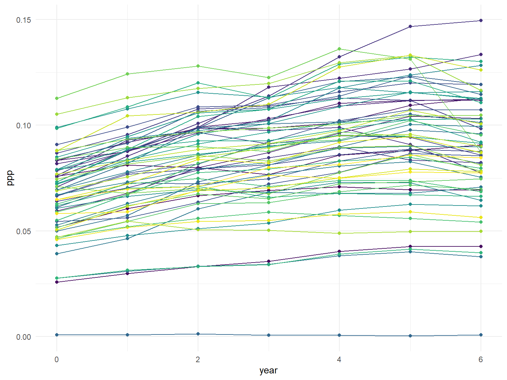
is there a rural/urban gradient?
sum_df <- opioid_total_data %>%
group_by(county, year, rural_urban) %>%
summarize(er_opioid = sum(er_opioid),
inpatient_total_opioid = sum(inpatient_total_opioid),
er_inpatient_total_opioid = sum(er_inpatient_total_opioid),
outpatient_opioid = sum(outpatient_opioid),
overall_opioid = sum(overall_opioid),
opioid_poisoning_deaths = sum(opioid_poisoning_deaths)
)join_df <- inner_join(sum_df, pharma_df, by = c("county", "year"))join_df %>%
ggplot(aes(x = year, y = opioid_poisoning_deaths/population*10000, color = rural_urban)) +
geom_point(alpha = 0.3) +
geom_smooth(method = "lm", se = FALSE) +
ylab("Opioid Deaths per 10,000") +
scale_x_continuous(breaks = c(2010, 2011, 2012), labels = c("2010", "2011", "2012")) +
labs(color = "Rural/Urban")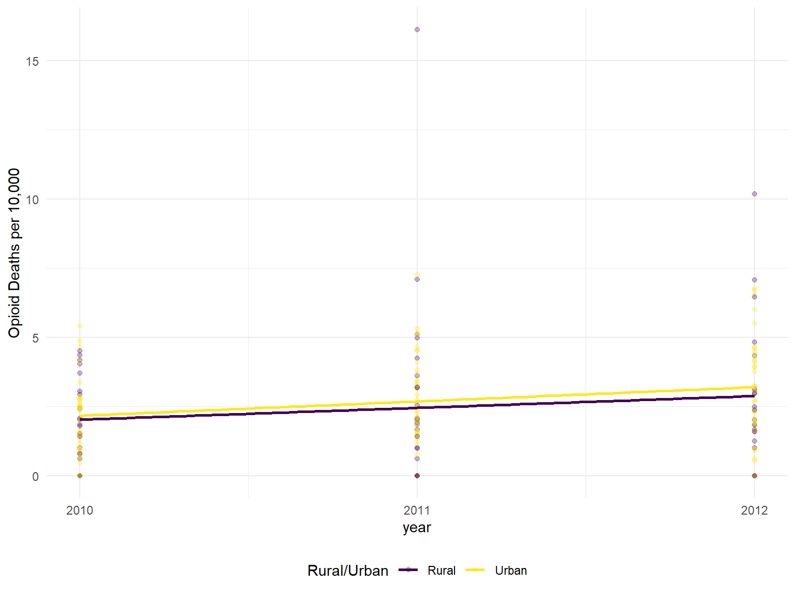
join_df %>%
ungroup() %>%
mutate(rural_urban = factor(rural_urban),
year = factor(year)) %>%
ggplot(aes(x = year, y = opioid_poisoning_deaths/population*10000, fill = rural_urban)) +
geom_boxplot(alpha = .5) +
ylab("Opioid Deaths per 10,000") +
scale_x_discrete(breaks = c(2010, 2011, 2012), labels = c("2010", "2011", "2012")) +
labs(fill = "Rural/Urban")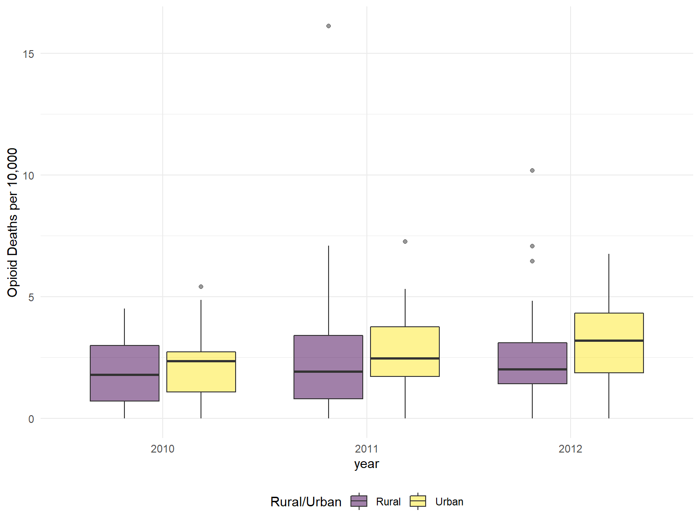
spaghetti plots
sum_total_df <- opioid_total_data %>%
group_by(county, year) %>%
summarize(er_opioid = sum(er_opioid),
inpatient_total_opioid = sum(inpatient_total_opioid),
er_inpatient_total_opioid = sum(er_inpatient_total_opioid),
outpatient_opioid = sum(outpatient_opioid),
overall_opioid = sum(overall_opioid),
opioid_poisoning_deaths = sum(opioid_poisoning_deaths)
)death_sales_df <- inner_join(sum_total_df, pharma_df, by = c("county", "year"))int_slope_dat <- pharma_df %>%
mutate(
year = recode(year,
"2006" = 0,
"2007" = 1,
"2008" = 2,
"2009" = 3,
"2010" = 4,
"2011" = 5,
"2012" = 6)
) %>%
group_by(county, year) %>%
summarize(ppp = pills_bought/population)int_slope_dat %>%
ggplot(aes(x = year, y = ppp, group = county)) +
geom_point() +
geom_line(se = FALSE) +
theme(legend.position = "none")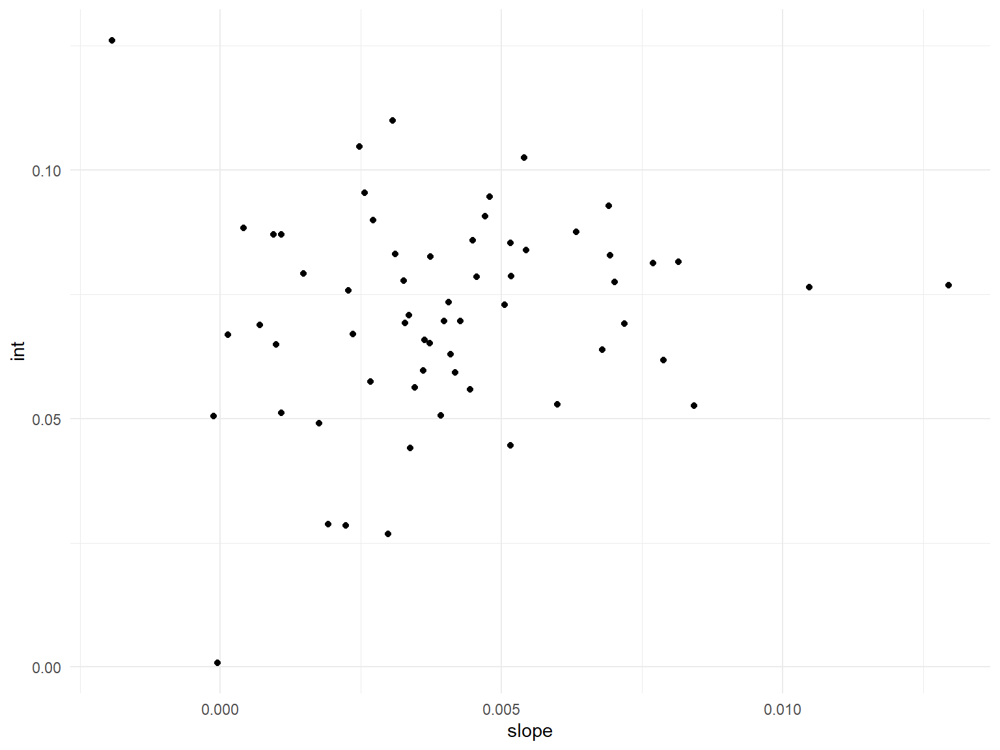
int_slope_df <- int_slope_dat %>%
nest(data = year:ppp) %>%
mutate(
models = map(data, ~lm(ppp ~ year, data = .x)),
result = map(models, broom::tidy)
) %>%
select(county, result) %>%
unnest(result) %>%
select(county, term, estimate) %>%
pivot_wider(
names_from = term,
values_from = estimate
) %>%
rename(int = "(Intercept)", slope = year)int_slope_df %>%
ggplot(aes(x = slope, y = int)) +
geom_point() +
theme(legend.position = "none")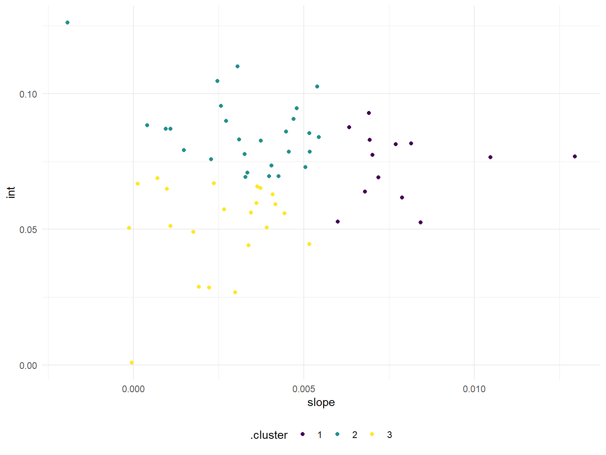
km_fit =
kmeans(
int_slope_df[,c(2,3)] %>% scale,
centers = 3)
int_slope_df =
broom::augment(km_fit, int_slope_df)int_slope_df %>%
ggplot(aes(x = slope, y = int, color = .cluster)) +
geom_point()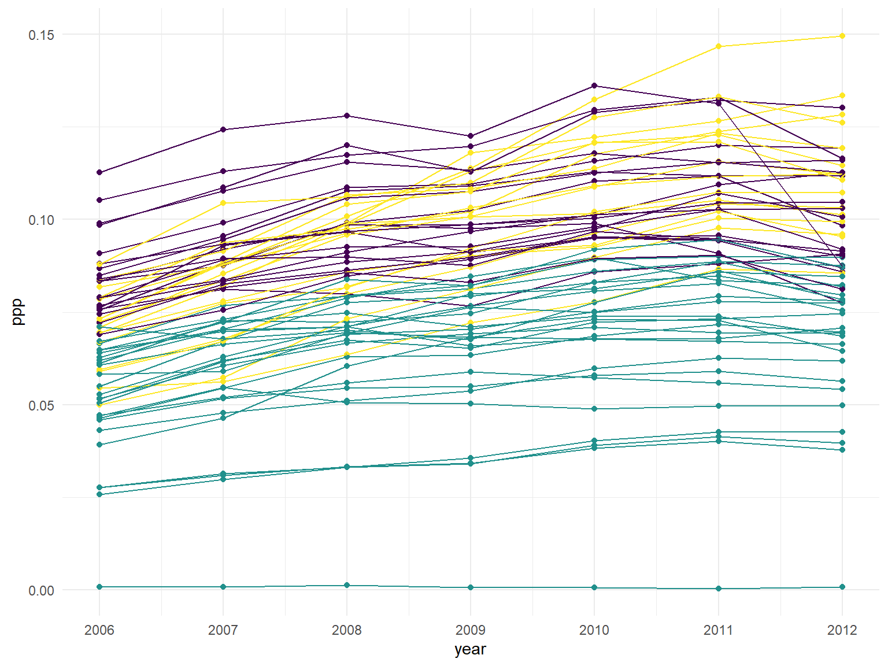
left_join(int_slope_dat, int_slope_df) %>%
ggplot(aes(x = year, y = ppp, group = county, color = .cluster)) +
geom_point() +
geom_path() +
scale_x_continuous(breaks = c(0, 1, 2, 3, 4, 5, 6), labels = c("2006", "2007", "2008", "2009", "2010", "2011", "2012")) +
theme(legend.position = "none")## Joining, by = "county"
death_sales_dat <- death_sales_df %>%
ungroup() %>%
mutate(
year = recode(year,
"2010" = 0,
"2011" = 1,
"2012" = 2)
)death_sales_dat %>%
filter(year == 2) %>%
ggplot(aes(x = population, y = opioid_poisoning_deaths)) +
geom_point(alpha = 0.3) +
geom_smooth(method = "lm", se = FALSE) +
theme(legend.position = "none")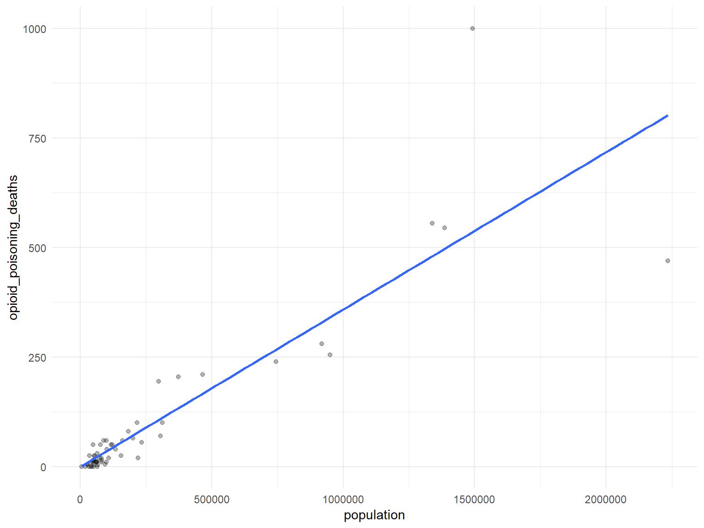
death_sales_dat %>%
filter(year == 2) %>%
ggplot(aes(x = pills_bought, y = opioid_poisoning_deaths)) +
geom_point() +
geom_smooth(method = "lm", se = FALSE) +
theme(legend.position = "none")
death_sales_df %>%
filter(year == 2012) %>%
ggplot(aes(x = population, y = pills_bought)) +
geom_point() +
geom_smooth(method = "lm", se = FALSE)
join_df %>%
ggplot(aes(x = ppp, y = opioid_poisoning_deaths/population*10000)) +
geom_point() +
geom_smooth(method = "lm", se = FALSE)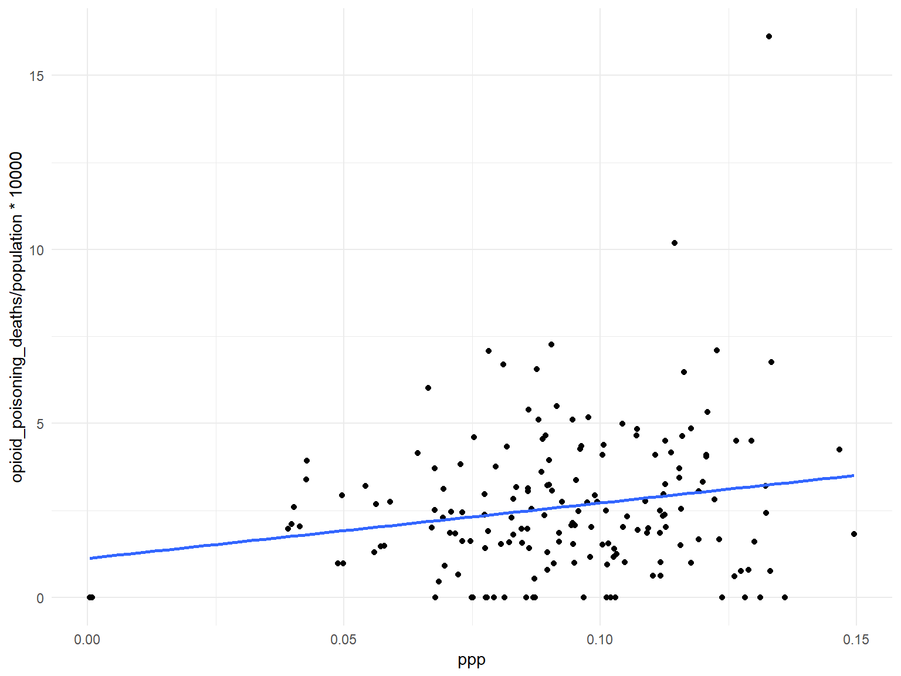
clustering with opioid deaths
death_sales_dat <- death_sales_df %>%
select(county, year, opioid_poisoning_deaths, population) %>%
mutate(
year = recode(year,
"2010" = 0,
"2011" = 1,
"2012" = 2)
)death_sales_dat %>%
ggplot(aes(x = year, y = opioid_poisoning_deaths/population*10000, group = county)) +
geom_point() +
geom_line(se = FALSE) +
theme(legend.position = "none")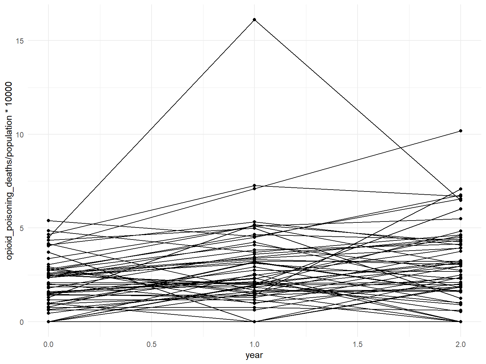
death_int_slope_df <- death_sales_dat %>%
nest(data = year:population) %>%
mutate(
models = map(data, ~lm(opioid_poisoning_deaths/population*10000 ~ year, data = .x)),
result = map(models, broom::tidy)
) %>%
select(county, result) %>%
unnest(result) %>%
select(county, term, estimate) %>%
pivot_wider(
names_from = term,
values_from = estimate
) %>%
rename(int = "(Intercept)", slope = year)death_int_slope_df %>%
ggplot(aes(x = slope, y = int)) +
geom_point() +
theme(legend.position = "none")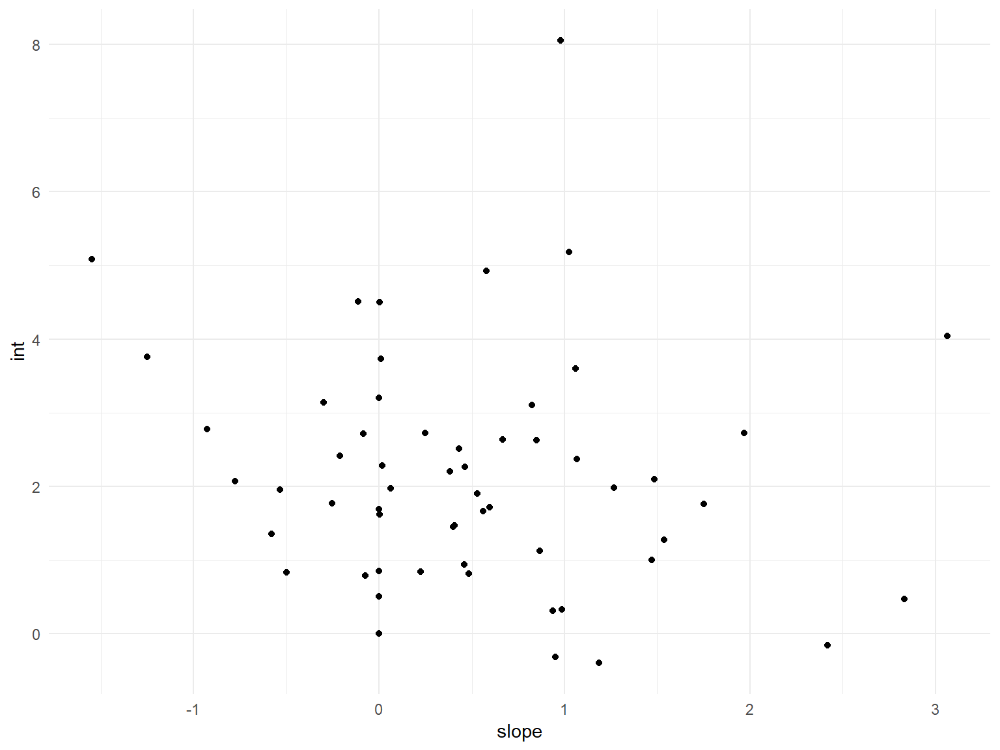
death_km_fit =
kmeans(
death_int_slope_df[,c(2,3)] %>% scale,
centers = 3)
death_int_slope_df =
broom::augment(death_km_fit, death_int_slope_df)death_int_slope_df %>%
ggplot(aes(x = slope, y = int, color = .cluster)) +
geom_point()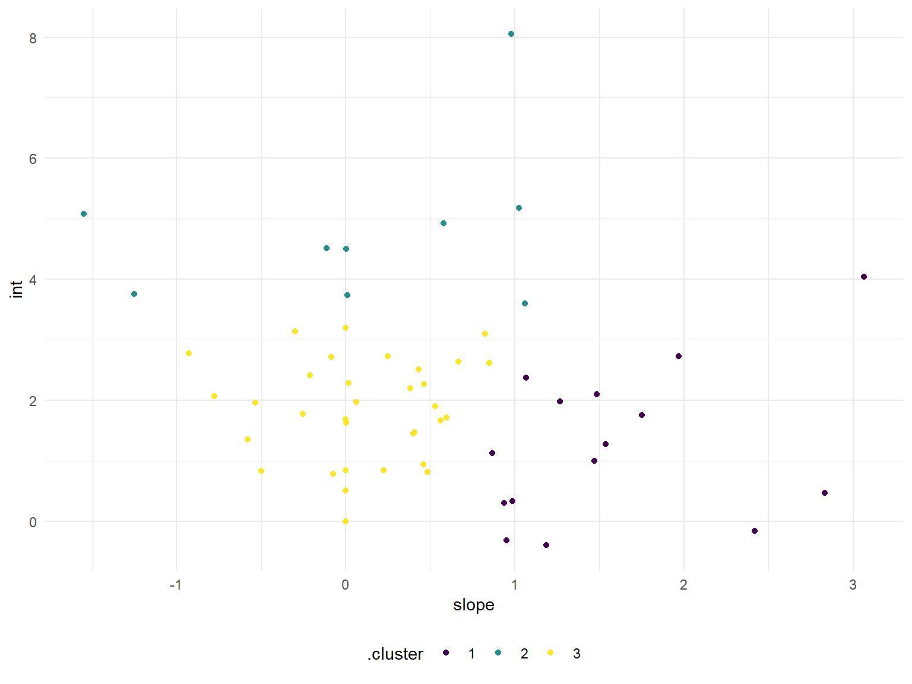
left_join(death_sales_dat, death_int_slope_df) %>%
ggplot(aes(x = year, y = opioid_poisoning_deaths/population*10000, group = county, color = .cluster)) +
geom_point() +
geom_path() +
scale_x_continuous(breaks = c(0, 1, 2), labels = c("2010", "2011", "2012")) +
theme(legend.position = "none")## Joining, by = "county"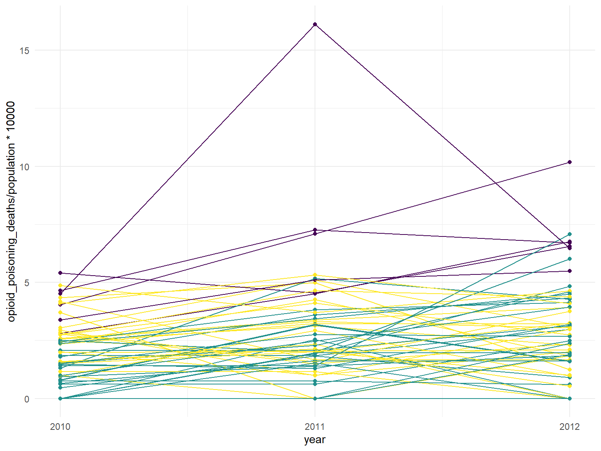
clustering with ER visits
er_sales_dat <- death_sales_df %>%
select(county, year, er_opioid, population) %>%
mutate(
year = recode(year,
"2010" = 0,
"2011" = 1,
"2012" = 2)
)er_sales_dat %>%
ggplot(aes(x = year, y = er_opioid/population*10000, group = county)) +
geom_point() +
geom_line(se = FALSE) +
theme(legend.position = "none")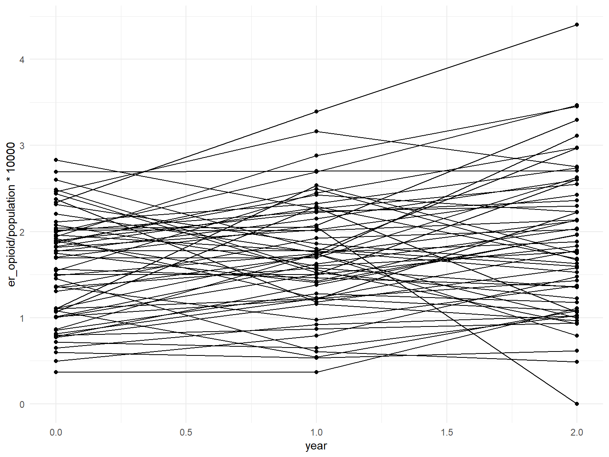
er_int_slope_df <- er_sales_dat %>%
nest(data = year:population) %>%
mutate(
models = map(data, ~lm(er_opioid/population*10000 ~ year, data = .x)),
result = map(models, broom::tidy)
) %>%
select(county, result) %>%
unnest(result) %>%
select(county, term, estimate) %>%
pivot_wider(
names_from = term,
values_from = estimate
) %>%
rename(int = "(Intercept)", slope = year)er_int_slope_df %>%
ggplot(aes(x = slope, y = int)) +
geom_point() +
theme(legend.position = "none")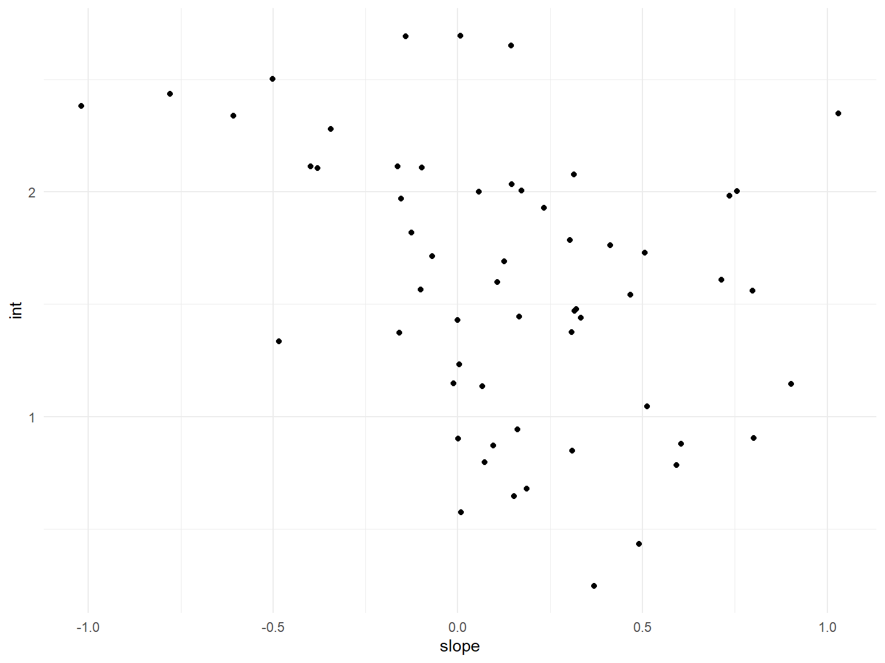
er_km_fit =
kmeans(
er_int_slope_df[,c(2,3)] %>% scale,
centers = 3)
er_int_slope_df =
broom::augment(er_km_fit, er_int_slope_df)er_int_slope_df %>%
ggplot(aes(x = slope, y = int, color = .cluster)) +
geom_point()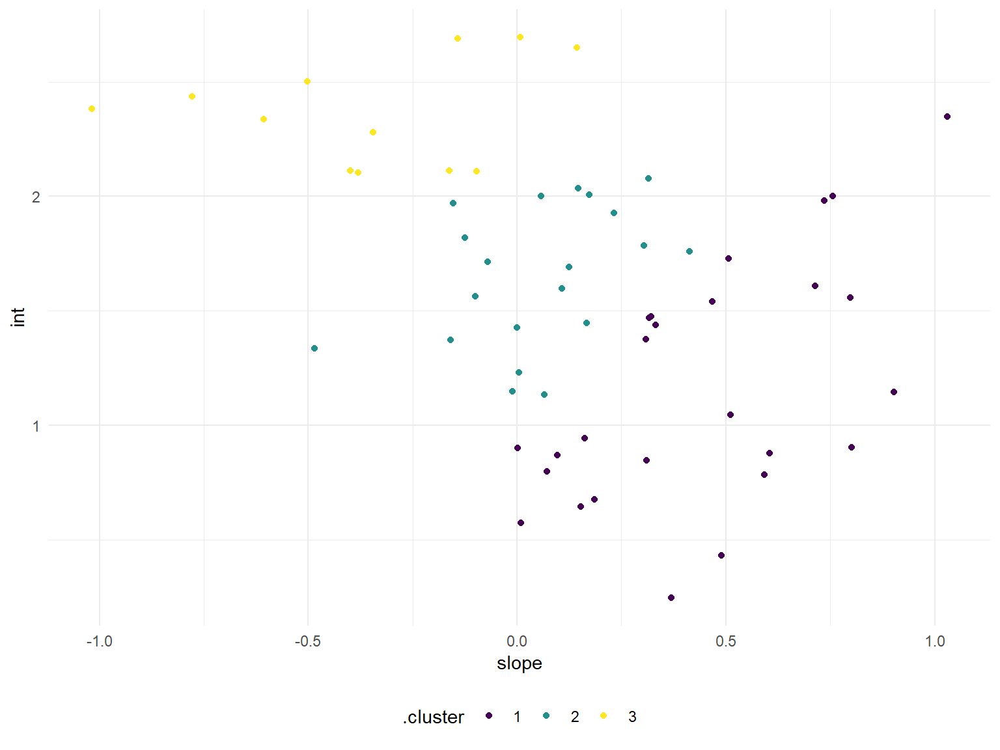
left_join(er_sales_dat, er_int_slope_df) %>%
ggplot(aes(x = year, y = er_opioid/population*10000, group = county, color = .cluster)) +
geom_point() +
geom_path() +
scale_x_continuous(breaks = c(0, 1, 2), labels = c("2010", "2011", "2012")) +
theme(legend.position = "none")## Joining, by = "county"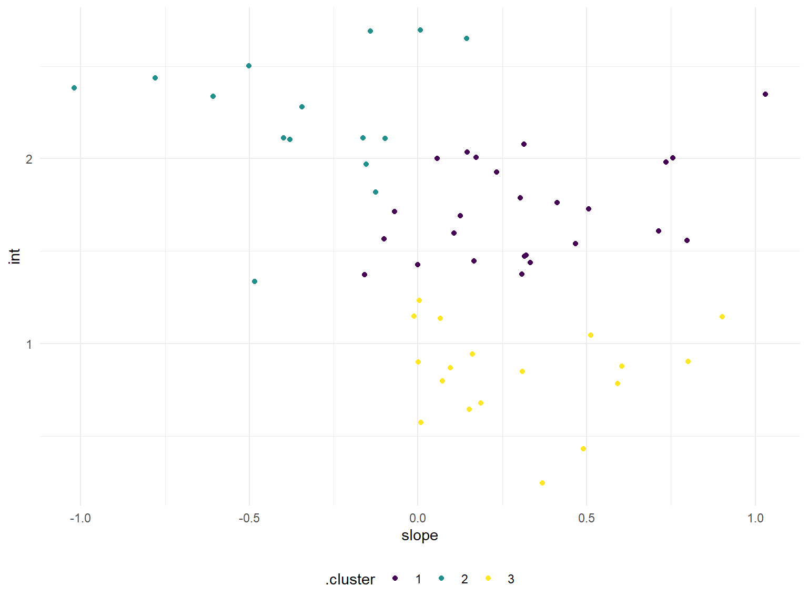